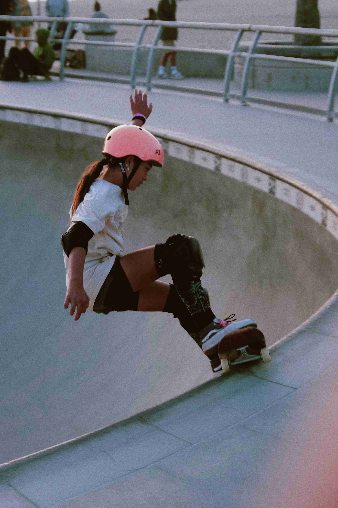
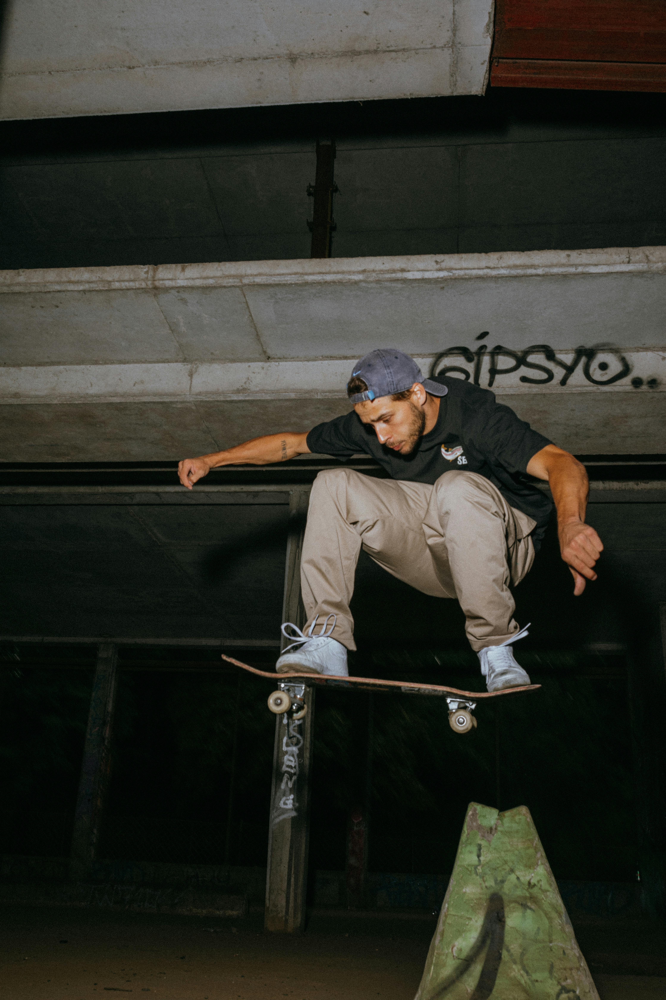

Skating er en komplisert og vanskelig aktivitet å mestre. Ved siden av å ha prestisjefylte turneringer som X-games og nå nylig OL, er skating en egen kultur.
Artikkelen 'I brytningspunktet mellom sport, livsstil og kunst' skrives det om hvordan skating er sport som ved siden av annen sport gir en sosial arena for barn, unge og voksene til å drive aktivitet sammen. Samtidig er skating en kultur. Det skrives om hvordan man kan formidle sitt særpreg gjennom videoer som er blitt veldig populært. Å vise sine beste triks i videoer er noe som gjøres av enkeltpersoner, men og av de største merkene som Trasher.
I artikkelen skrives det masse om skating som sport, og som kultur. Hele artikkelen kan leses her.

Med kulturen så kommer det og begreper, slang og språk som ikke er forstålig for alle.
De fleste triks har et navn, her er en liste med navnene, og en link til å se hva trikset er:
Som nevnt i artikkelen over er skating blitt til kultur. Man kan på noen måter si en kunst hvor du utrykker hvem du er gjennom bevegelser og triks. Med skating så følger det med mote, musikksmak og filmskaing. Dette gir skating et godt grunnlag til å være og holde seg stort på sosiale medier som Instagram og YouTube.
Skateboarding og sosiale medier går hånd i hånd. Det er her skatere for uttrykket seg, delt triksene sine, delt moten sin og et sted hvor skatere kommer i kontakt med andre som deler interessen. Men ikke bare det... Sosiale medier har åpnet opp for mulighetene til å sponse skatere, som gjør at skateboarding er nooe du i dag kan leve av om du er god nok.

De mest populære mediene hvor en skater deler innhold er Instagram, Youtube og TikTok. Disse mediene gir forskjellige muligheter til å dele sitt innhold og nå andre uansett hvor de er i verden. Om du skal dele tips og triks, eller dele dine villeste skills så har alle disse plattformene det du trenger.
Den 16 år gamle jenta fra Brasil er den mest fulgte skateren på Instragram med sine 9,1 MILLIONER følgere
Etter å få sitt første skateboard i en alder av 6 år, har Rayssa Leal blitt en sensasjon innen skateboarding. I en alder av 16 har hun allerede klart å vinne sølv og bronse i OL, verdensmesterskapet 2 ganger, to gull i X-Games og 2 Super Crowns. Hun er den mest fulgte skateren i verden, og har i dag nok sponsorer til å leve godt av skateboarding i mange år fremover.
Hun er daglig med på å inspirere unge skatere, og deler mote, skating og livvstil på sin Instagram-profil.